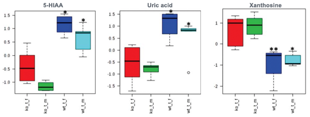
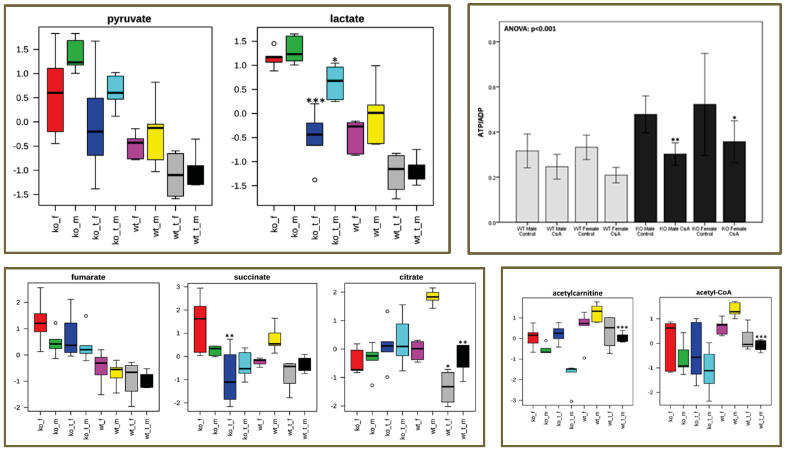
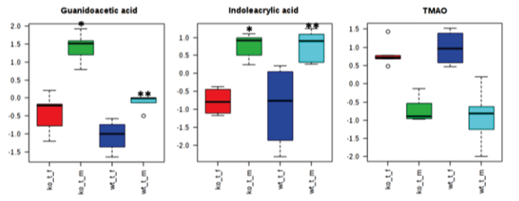

We treated wild-type and mice lacking cyclophilin (CypD; Ppif -/-) with cyclosporin A (CsA) to test the role and contribution of CypD to widely described CsA-induced renal toxicity and oxidative stress. Our results showed an increase in several known uremic toxins as well as oxidative stress markers prostaglandin F2α and 8-isoprostane in CsA-treated WT, but not in Ppif -/- animals. Similarly, a decline in S-adenosylmethionine (SAM) and the resulting methylation potential indicative of DNA hypomethylation was observed only in CsA-treated WT mice. This confirms previous reports of protective effects of CypD deletion on the mouse kidney mediated through a stronger resistance of these animals to oxidative stress and DNA methylation damage. However, negative effects of CsA on the glycolysis and overall energy metabolism in Ppif -/- mice also indicated that additional, CypD-independent pathways are involved in the toxic effects of CsA on the kidney.
CypD (encoded by the Ppif gene) is an essential structural component of the mitochondrial permeability transition pore (MPTP) and is involved in MPTP opening and subsequent regulation of cell death.1,2 Despite years of research, the mechanism of CsA nephrotoxicity remains poorly understood, with several potential mechanisms identified: oxidative stress,3,4 apoptosis,5 metabolic changes6–9 and an increase of vascular resistance resulting in decreased renal blood flow.10,11
CSA blocks the phosphatase activity of calcineurin after binding to its cellular co-effectors, the cyclophilins.12,13 CsA is responsible for a significant improvement of short-term survival of transplant organs.14 However, long-term graft survival in renal transplant recipients has only seen a marginal improvement.15,16 As of today, approximately 50% of renal allograft transplant patients still lose their transplant after 12 years, often due to immunosuppressant-induced nephrotoxicity.
Eight-week old male and female mice (WT B6.129SF2 and Ppif -/-) were given either skim milk or treated by oral gavage with CsA at (a) 25 mg/kg/day and (b) 50 mg/kg/day for 28 days. Animals were weighed weekly and blood glucose was monitored at the same time via tail vein prick blood collection. Urine and plasma collections occurred biweekly. At the end of treatment, the mice were sacrificed and blood, urine, and tissues were collected.
Kidney tissue samples were fixed and embedded before staining in eosin solution. Stain intensity was optimized in ammonia water and sections were dehydrated in xylene. Images of the kidney sections were captured and 25 high-powered fields were examined in the tubulo-interstitium of the cortex and outer medulla of each section. The kidneys were examined for inflammation, epithelial necrosis, loss of brush border, and tubular dilatation.
Oxidative stress markers, creatinine, CsA, and high-energy phosphate metabolite concentrations were determined in extracted blood, plasma, urine, and snap-frozen tissue samples with LC-MS/MS. Corresponding deuterated internal standards were used for quantification.
Tissue samples were homogenized and subjected to a modified semi-quantitative targeted metabolomics. Positive identification of the metabolites of interest was performed through injection of pure compound standards. Some proteins were further analyzed by Western blot.
Neither phenotype nor treatment with CsA impacted animal weight gain or blood glucose levels. Inflammation was not observed in the glomerular or tubulointerstitial compartments of either strain of mice. Vascular congestion was seen in the glomeruli of Ppif -/- mice.
No changes in CsA blood concentration were observed between the mice and plasma creatinine levels increased in all CsA-treated animals, but reached significance only in WT animals treated with 50 mg/kg/day CsA.
 Hyperuricemia increases risk of hypertension, diabetes, and metabolic syndrome in renal transplant patients. High uric acid concentrations and low xanthine levels suggest increased conversion of xanthine to uric acid. 5-HIAA accumulates in uremic patients and induces endothelial inflammation and oxidative stress leading to increased cardiovascular risk in kidney disease.
 Following CsA treatment, Ppif -/- animals showed significantly lower kidney lactate concentrations, unchanged Krebs cycle activity, and significant decreases in energy production following CsA treatment. Ppif -/- animals shift from β-fatty acid oxidation towards glucose metabolism, which is exhibited by lower concentrations of acetyl-CoA and acetyl-CoA-transporting acetylcarnitine as compared to their WT counterparts.
 Several metabolites varied in CsA-treated females as compared to males (independent of the mouse strain). Our results suggest that female mice are more sensitive to nephrotoxic effects of CsA when compared to their respective male counterparts, despite their estrogen-mediated protected status when untreated.
(1) Cyclophilin D-Dependent Mitochondrial Permeability Transition Regulates Some Necrotic but Not Apoptotic Cell Death. Nature, 2005.
(2) Cyclophilin D Is a Component of Mitochondrial Permeability Transition and Mediates Neuronal Cell Death After Focal Cerebral Ischemia. PNAS, 2005.
(3) Oxidative Stress Caused by Mitochondrial Calcium Overload. Ann NY Acad Sci, 2010.
(4) Oxidative and Nitrosative Stress in Kidney Disease: A Case for Cyclosporine A. J Nephrol, 2005.
(5) Mechanisms of Cyclosporine-Induced Renal Cell Apoptosis: A Systematic Review. Amer J Nephrol, 2013.
(6) Urine Metabolites Reflect Time-Dependent Effects of Cyclosporine and Sirolimus on Rat Kidney Function. Chem Res Toxicol, 2009.
(7) Association of Immunosuppressant-Induced Protein Changes in the Rat Kidney with Changes in Urine Metabolite Patterns: A Proteo-Metabonomic Study. J Proteome Res, 2010.
(8) Low-Salt Diet and Cyclosporine Nephrotoxicity: Changes in Kidney Cell Metabolism. J Proteome Res, 2012.
(9) Metabolic Profiles in Urine Reflect Nephrotoxicity of Sirolimus and Cyclosporine Following Rat Kidney Transplantation. Nephron Exp Nephrol, 2009.
(10) Differential Effects of Cyclosporine and Tacrolimus on Arterial Function. Transpl Int, 2011.
(11) Effect of Tacrolimus and Cyclosporine on Renal Microcirculation and Nitric Oxide Production. Transpl Proc, 2004.
(12) Nuclear Association of a T-Cell Transcription Factor Blocked by FK-506 and Cyclosporin A. Nature, 1991.
(13) Calcineurin Is a Common Target of Cyclophilin-Cyclosporin A and FKBP-Fk506 Complexes. Cell, 1991.
(14) Exploring Treatment Options in Renal Transplantation: The Problems of Chronic Allograft Dysfunction and Drug-Related Nephrotoxicity. Transplantation, 2001.
(15) Long-Term Renal Allograft Survival: Have We Made Significant Progress or Is It Time to Rethink Our Analytic and Therapeutic Strategies? Am J Transpl, 2004.
(16) Twenty-Third Official Adult Heart Transplantation Report. J Heart Lung Transpl, 2006.
(17) Postconditioning Inhibits Mitochondrial Permeability Transition. Circulation, 2005.
(18) Inhibiting Mitochondrial Permeability Transition Pore Opening: A New Paradigm for Myocardial Preconditioning? Cardiovasc Res, 2002.
(19) Postconditioning Inhibits Mitochondrial Permeability Transition. Future Cardiol, 2005.
(20) Inhibition of Anoxia-Induced Injury in Heart Myocytes by Cyclosporin A. J Mol Cell Cardio, 1991.
(21) Cyclosporine A Prevents Apoptosis- Related Mitochondrial Dysfunction After Neonatal Cardioplegic Arrest. J Thorac Cardiovasc Surg, 2008.
(22) Loss of Cyclophilin D Reveals a Critical Role for Mitochondrial Permeability Transition in Cell Death. Nature, 2005.
(23) Cyclophilin D Gene Ablation Protects Mice from Ischemic Renal Injury. Am J Phys Renal, 2009.
(24) Knockdown of Cyclophilin D Gene by RNAi Protects Rat from Ischemia/ Reperfusion-Induced Renal Injury. Kidney & Blood P Res, 2004.
(25) Cyclophilin D and the Mitochondrial Permeability Transition in Kidney Proximal Tubules After Hypoxic and Ischemic Injury. Am J Phys Renal, 2011.
(26) Physiologic Functions of Cyclophilin D and the Mitochondrial Permeability Transition Pore. Circ J, 2013.
(27) Cyclophilin D Controls Mitochondrial Pore- Dependent ca(2+) Exchange, Metabolic Flexibility, and Propensity for Heart Failure in Mice. J Clin Invest, 2010.
(28) CypD(-/-) Hearts Have Altered Levels of Proteins Involved in Krebs Cycle, Branch Chain Amino Acid Degradation and Pyruvate Metabolism. J Mol Cell Cardio, 2013.